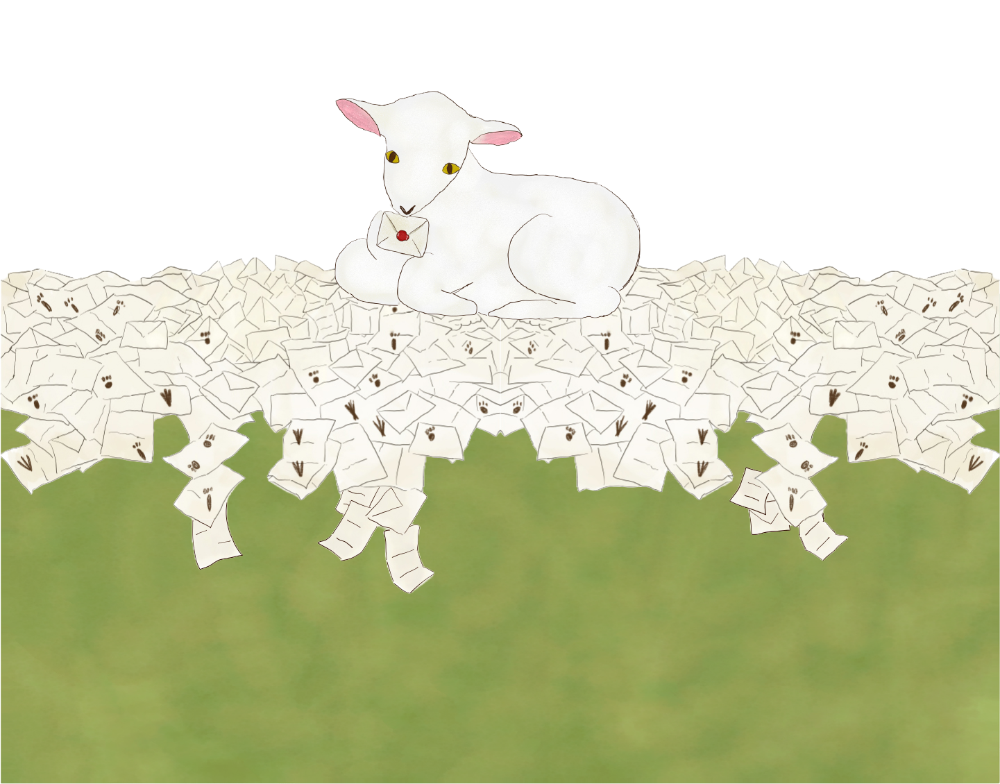

Web・グラフィックデザインを通して、
お客様の目的や課題に寄り添った制作を行っております。
Webでは、コーポレートサイトやLPなど、
情報が分かりやすく伝わるデザインをご提案いたします。
グラフィックでは、バナーやSNS画像、フライヤーなど、
媒体や用途に応じた表現を制作します。
また、Webサイトのコーディングにも対応しております。
これまで制作してきたグラフィックデザインや
Webデザインのお仕事をご紹介します。


